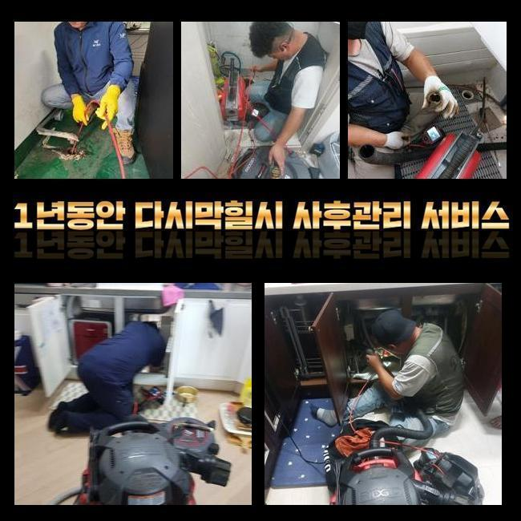
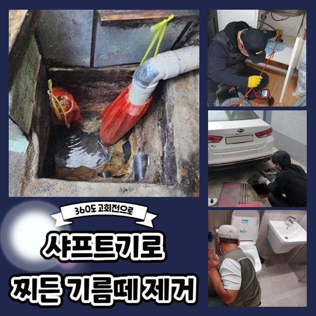
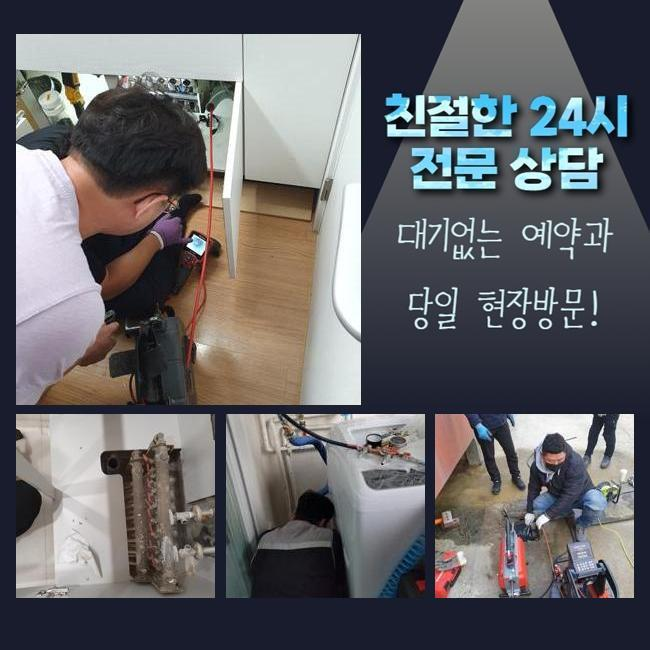
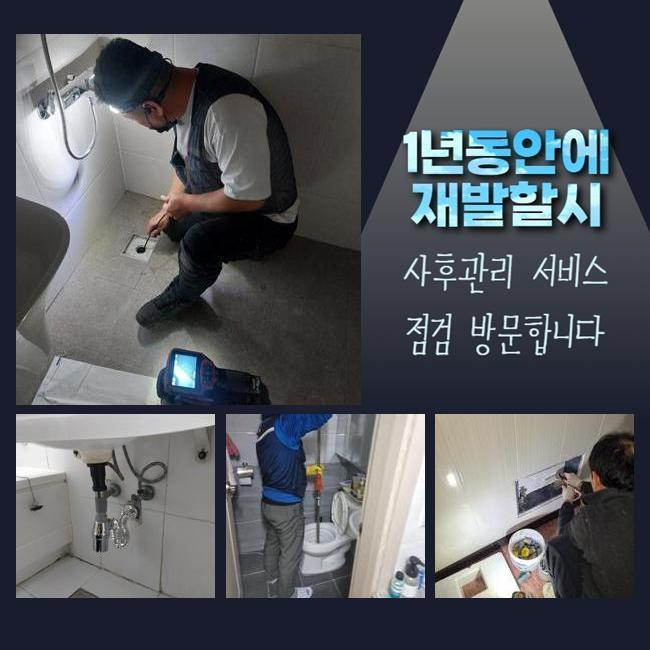
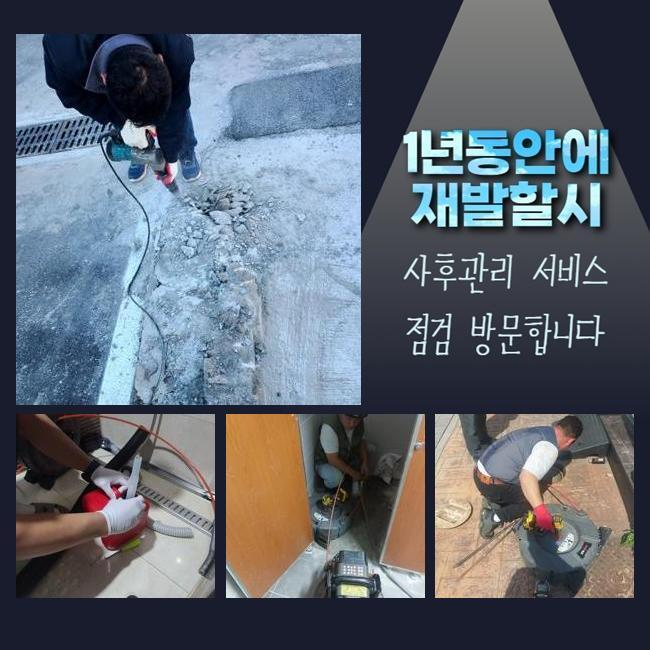
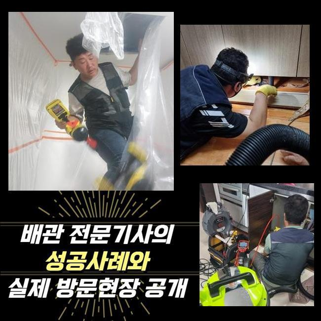

🏠 안산 중앙동화장실하수구막힘 초지동 하수구뚫는비용 해결방법
안산 중앙동 싱크대막힘 전문 시공 후기

📋 작업 개요
- 위치: 안산 중앙동, 중앙동, 안산
- 서비스 유형: 싱크대막힘, 하수구막힘, 배관막힘, 집수정막힘, 뚫는업체, 배관청소, 고압세척
- 작업 일시: 2025. 1. 9. 23:07
- 업체명: 하수구수사대 (010-5615-2118)
🔍 문제 상황
안산 중앙동화장실하수구막힘 초지동 하수구뚫는비용 해결방법
주방에서 조리공간이 막힐 시 식자재를 취급하는것에 불편들을 감당해야됩니다
식당에서 이같은 문제들이 발생되면 영업자체에 부정적 영향들을 주는데요
따라서 전문성을 갖춘 상태에서 해결해주는것이 필요한데요
요식업소에서 배수구에서 통수가 안되는 문제들이 나타났죠
근처의 식당에까지 통수오류의 사태가 목격되었어요
해당 상황은 공용하수도에 까닭이 생겨났을 확률들이 있는데요
그렇기에 공유관로를 사용하는 집수정의 점검들도 수반되야되는 현장이였는데요
도달하여 먼저 주방 주방쪽이 막히게된걸 확인했는데요

🔎 원인 분석
💡 전문가 진단: 정밀 진단 장비를 사용하여 슬러지의 고착 여부를 판명하고 타격/세척 작업을 실시했습니다.
그로 인하여 물빠짐이 불가했고 이에 맞는 대응이 필요했죠
하수도의 문제들은 수많은 기조로 등장하는데 이 중 상당수의 요소는 구조때문에 나타난 문제와 더불어 기름들이 쌓여서그런건데요
막히는 증상은 위생적인 부분에도 좋지못한 악영향들을 끼쳐서 그에 맞는 방식들을 사용해보았어요
내시경카메라를 하수도로 집어넣고 구석구석 살폈더니 여기저기에 잔해들이 축적된 걸 인지했죠
내시경장치는 육안으로는 안보이는 하수도를 살피는 기기로서 렌즈가 있는 줄을 배수관으로 투입해 라이브로 내측을 확인시켜주는 기기에요
살펴보았더니 이물들이 흐르질 않고 정체하고 있던 모습이였죠
하수도가 오래된 경우라던가 구조와 관련된 증상이 아닌 배수 과정에서 흐르던 식자재의 잔해가 쌓이는 바람에 하수 배출을 불가하게 만든것이 원인이였죠
씽크대배수로가 외부라인이 통하고 있던 구조인지라 주방에서 발생된 이물질이 바깥부분에 영향력들을 미친 상황이였죠
까닭들을 체크해보고 대대적으로 하수관을 뚫어보고자 청소했는데요
해당 시점에 써준것은 플렉스 샤프트라는 기기로서 이 기기는 배수관에서 원 운동을 하며 고착물을 제거하는 중점적인 장치죠

🔧 작업 과정
샤프트기계를 사용한다면 주방쪽이 막히게 되었을 때 오염원을 제거시키고 또한 내식성에 대해서도 손상케하는 일도 없고 스무스하게 작업해줄 수 있어요
노커체인을 투입시켜 목표지점에 접근한 다음 사슬들로 오염원을 청소해보았어요
다양한 잔재가 샤프트장비에 걸려서 빠져나왔어요
엉킨 이물들을 확인했더니 예측한것처럼 싱크볼에서 침투된 음식쓰레기와 기름슬러지들이 상당했죠
그 가운데 식재료들이 많은 양이였는데 손질전의 제거된 뿌리의 잔여물들로 개수대에서 빠지면서 물이 안빠지게 만드는 원인들이 되었네요
뿌리의 경우엔 원활히 흘러가지 않는 까닭에 배수관에서 한 자리 차지해 통수과정을 방해합니다
음식폐기물과 기름덩어리들도 대량으로 배출됐는데 조리공간에서 사용하는 오일등이 하수도로 빠져나가면서 구간마다 굳게된건데요
기름물질들은 하수도에서 기간이 흐름에 따라 굳게되며 벽라인에 흡착하여 다른 식재료와 뒤섞여 더욱 빠르게 문제들을 양산시키게되요
기름의경우엔 날이갈수록 단단해져서 간소한 방법으로 해결할 수 없는 경우들이 다수입니다
샤프트기계를 준비시켜 청소해주고 석션도구를 써서 잔존하는 부유물을 흡입시켜 깨끗하게 정리했는데요
딱딱해진 기름덩어리들과 떨어져나온 오염물들도 폐기한 후 하수관을 내시경장비들로 검수하며 오염도를 관찰할 수 있었습니다
증세의 경우 바로 잡았고 밖의 하수관의 솟아오르는 증세도 깔끔히 사그라들었습니다
작업 이후 고객분에게 조리공간 수챗구멍 관리들에 대한 유용한 사안도 안내드렸답니다
먼저 씽크대에 잔해들을 여과없이 배출시키지 않는게 도움이된다고 안내했는데요
덧붙여 딱딱한 채소라던가 기름의경우 하수구 막힘의 여러 트러블의 요소가 되므로 필히 이물질들을 씽크볼로 버리기에 앞서 별도 처리하시는게 좋다고 당부드렸죠
기름물질들은 바닥라인의 내부표면에서 흡착되어버려서 사용한 기름의경우 주방타올로 걷어내고 세척해주시는것이 권장하고 있는 방식이에요


✅ 작업 완료
그밖에 문제들을 예방하려면 지속적으로 배수구들을 세정해주고 필요하면 클리너들을 쓰는게 이점으로 작용한다는것도 설명했어요
의뢰인분은 저희의 설명을 들은 후 신경써서 관리실시를 신경써서 하시겠다고 말씀하셨죠
하수구 문제들은 방임한다면 처음과다르게 심각해져서 미리 조속히 처리하는것이 제일 좋습니다
끝내 의뢰인의 불편들을 해결해드려 안심할 수 있었고 예상치못한 문제들을 막고자 지속적인 관리들과 수반되야함을 최종적으로 전해드립니다



⚠️ 주방 싱크대 배관 막힘 예방 수칙
- ✅ 기름기가 묻은 식기나 프라이팬은 설거지 전 키친타올로 반드시 기름때를 닦아내세요.
- ✅ 주기적으로 싱크대 개수대에 뜨거운 물을 가득 받아 한 번에 내려 배관 내부 기름을 씻어내세요.
- ✅ 배수구 거름망을 미세한 필터로 사용하시고 음식물 찌꺼기가 틈으로 새어 들지 않게 관리하세요.
- ✅ 베이킹소다와 식초를 뜨거운 물과 함께 일주일에 한 번씩 부어주면 배관 살균과 막힘 예방에 좋습니다.
💡 핵심 정리
- 확실한 장비 작업(내시경 점검 및 샤프트 스케일링)으로 원인을 뿌리 뽑습니다.
- 작업 후 1년 이내에 동일한 부위 재발 시 100% 무상 A/S 서비스를 보장합니다.
- 서울 · 경기 · 인천 전 지역에 24시간 언제든 긴급 출동할 수 있도록 항시 대기 중입니다.
❓ 자주 묻는 질문 (FAQ)
🚨 안산 중앙동 싱크대막힘 문제로 고민이신가요?
정확한 원인 진단과 확실한 시공으로 재발 없는 해결을 약속드립니다.
24시간 긴급 출동 | 서울 · 경기 · 인천 전지역 | 1년 내 재발 시 무상 A/S